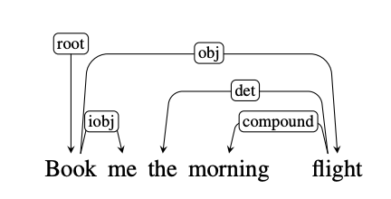
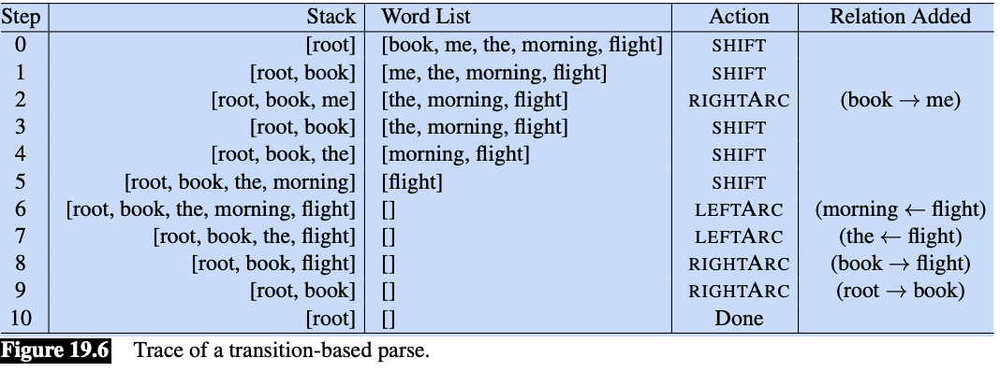

# If you are colab, un-comment the pip install below.
# This will not be necessary on DeepNote or your local installation
#!pip install data401_nlpLab 1 - Introduction to the SpaCy Pipeline
Preface
Welcome to your first hands-on experience with Natural Language Processing! This notebook takes a different approach from traditional NLP courses. Rather than starting with abstract theory, we will learn NLP concepts by working directly with spaCy, a powerful library used by data scientists and engineers in real-world applications.
Why this approach? Learning NLP can be overwhelming. Textbooks like Jurafsky and Martin’s Speech and Language Processing are comprehensive but dense. By grounding our learning in spaCy, you will build practical skills while gaining conceptual understanding. Every term we introduce connects to something you can see and manipulate in code.
What is spaCy? SpaCy v.3 is an industrial-strength NLP library for Python. Companies use it to build everything from chatbots to document analysis systems. When you learn spaCy, you are learning a tool that employers expect data scientists to know. It processes text quickly, integrates well with other Python libraries, and handles the complex details of language analysis for you.
This notebook provides a whirlwind tour of spaCy’s capabilities. We will work with two fundamental objects: the Doc (a processed text document) and Token (individual pieces of text like words and punctuation). By the end, you will understand how spaCy breaks text apart, labels it, and identifies relationships between words.
Do not worry if everything does not click immediately. This is an introduction. We will revisit these concepts throughout the course, and each time they will become clearer. The goal today is familiarity, not mastery.
We will also begin exploring how traditional NLP methods relate to Large Language Models (LLMs). Traditional methods (like those in spaCy) are fast, predictable, and transparent. LLMs (like ChatGPT) are flexible and capture nuance but are slower and less explainable. Understanding when to use each is a key skill for modern NLP practitioners.
Related resources - This is a very thorough overview of SpaCy worth skimming! https://deepnote.com/blog/ultimate-guide-to-the-spacy-library-in-python. - You will also be working your way through the spaCy tutorial here (https://course.spacy.io/en) over the first half of this course.
Learning objectives
- Introduction to core NLP components and spaCy pipeline
- Introduction to tokens and their attributes
- Introduction to language models as probability distributions
- Bigram models
- Neural language models
- Thought exercise - Traditional NLP vs LLMs
- Sentiment analysis
- Summarization
- Demonstration of flexible SpaCy pipelines incorporating LLM components
How to Use This Notebook
Your goal is to read the notes and code in this notebook, and answer questions. This is what you will do in each notebook in this class. I used AI copiously to give you a sense of how you might use AI to learn a new library.
If there is code you don’t understand (and that could be most of it!), ask AI to explain it cell-by-cell. Part of your goal is to become fluent in reading code. Make small changes and experiment. If you write code, make tiny, iterative changes and test. Get familiar with the patterns of what must be done and why.
As a student, you are responsible for answering all questions in the reflection sections and running the last cell in the notebook to submit your answers. They are ungraded, though we’ll talk about your thoughts and questions in class.
Note: you will see cells marked with #| eval: false throughout these notebooks. These are directives that tell the nbdev framework used by this repository not to test during continuous integration. Since the code in these notebooks are not part of the library, most, if not, all will be marked #| eval: false. You can delete them in your own notebooks, if you like.
Load Libraries and Models
Before we can work with spaCy, we need to import the necessary libraries. Think of this as gathering your tools before starting a project.
# Environment (must run first)
from dotenv import load_dotenv
import data401_nlp
print(data401_nlp.__version__)
# Core libs
import os
import sys
# ML libs
import pandas as pd
# NLP libs
import spacy
import nltk
# Tools libs
import json
import fastcore.tools as fc
import orjson0.0.7# This checks to make sure your SUBMIT_API_KEY is present
# It can take a moment to load... run again if it fails the first time
print("SUBMIT_API_KEY present:", bool(os.getenv("SUBMIT_API_KEY")))Detected environment: dotenv
SUBMIT_API_KEY present: TrueLoading a spaCy Language Model
SpaCy does not analyze text on its own. It needs a language model—a pre-trained set of rules and patterns for a specific language. We are using en_core_web_sm, a small English model optimized for CPU processing. The “sm” stands for “small,” meaning it downloads quickly and runs fast, though larger models exist for more demanding applications.
When you visit the model documentation, you will find details about what text it was trained on, what components it includes, and how accurate it is. We will explore most of these components over the coming weeks.
# load spacy
# This helper ensures it will automatically download if not present
from data401_nlp.helpers.spacy import ensure_spacy_model
def get_nlp():
return ensure_spacy_model("en_core_web_sm")Setting Up LLM Access
Later in this notebook, we will compare traditional NLP methods with LLM-based approaches. The code below sets up access to an LLM through our helper functions. Do not worry about the details here—just know that this gives us a way to ask questions to an AI model like Claude or GPT.
Your model is currently set to Claude, though you can change it to OpenAI by modifying LLM_MODELS[0] to LLM_MODELS[1]. It is easy to extend the helper to accommodate others and send a pull request to me, if you use a different model that you’d like added.
from data401_nlp.helpers.env import load_env
from data401_nlp.helpers.llm import make_chat, LLM_MODELS
load_env()
DEFAULT_MODEL = LLM_MODELS[0] # Assumes Claude key... adjust if needed.
print("Selected model:", DEFAULT_MODEL)
chat = make_chat(DEFAULT_MODEL)Selected model: anthropic/claude-sonnet-4-5# You must explicitly opt in, if you want to use and run cells with external LLM calls
ENABLE_LLM = Falsedef llm_status(chat_fn):
if not ENABLE_LLM:
return "disabled"
try:
chat_fn("ping", max_tokens=1)
return "ready"
except Exception:
return "misconfigured"
print("LLM status:", llm_status(chat))LLM status: disableddef make_and_test_chat(model_name):
if not ENABLE_LLM:
return None # silent no-op
try:
chat = make_chat(model_name)
chat("ping", max_tokens=1)
return chat
except Exception:
return None # silent faildef llm_available():
return ENABLE_LLM and chat is not NoneThe listette library wraps the litellm library and makes it possible for us to add models with API keys to this notebook. I’ve included it in helper functions behind the scenes.
You don’t need a subscription or API access, if you don’t have it already. Use these notebooks as “read-only” for those sections. But if you do have a key, do use it!
- Use Colab or Deepnote’s Secrets feature (recommended) - store keys in Colab’s built-in secrets manager
- Set environment variables manually in your notebook
- Use a
.envfile in your local environment
Part A: Exploring the SpaCy Pipeline (Tokens, POS, NER, and Parse Trees)
In this section, you will learn how spaCy transforms raw text into structured data. This is the foundation of all NLP work: taking unstructured text and adding labels, categories, and relationships that computers can work with.
The Doc Object: Your Container for Processed Text
A Doc object is a smart container for data. When you give text to spaCy, it returns a Doc containing your original text plus all the analysis spaCy performs. Every word gets labeled, entities get identified, and grammatical relationships get mapped out—all stored in this single object.
The nlp object is what does the work. When you call nlp(text), spaCy runs your text through a series of processing steps called a pipeline. Each step adds different information: one step breaks text into words, another identifies parts of speech, another finds named entities, and so on.
In practice, you create one Doc per document. An Amazon review would be one Doc. A news article would be one Doc. This organization helps when you are processing many documents at once.
The image below captures a high-level overview of the spaCy API. Here you can see that text is processed by the nlp pipeline which runs the tokenizer. The Doc object itself has Token and Span objects. Let’s look at tokens below. (We’ll hold off on spans till we have a use for them.)

# Sample text with multiple entities and interesting linguistic features
sample_text = """Dr. Sarah Chen joined Anthropic in San Francisco on January 15, 2024. She previously worked at Google Brain, where she led a team developing language models that could process over 100,000 tokens per second."""
# Process with spaCy
# We're going to call nlp inside a function so that we don't rely on a global nlp object
# for demos
nlp = get_nlp()
doc = nlp(sample_text)
doc✅ spaCy model 'en_core_web_sm' loaded successfullyDr. Sarah Chen joined Anthropic in San Francisco on January 15, 2024. She previously worked at Google Brain, where she led a team developing language models that could process over 100,000 tokens per second.[word.text for word in doc]['Dr.',
'Sarah',
'Chen',
'joined',
'Anthropic',
'in',
'San',
'Francisco',
'on',
'January',
'15',
',',
'2024',
'.',
'She',
'previously',
'worked',
'at',
'Google',
'Brain',
',',
'where',
'she',
'led',
'a',
'team',
'developing',
'language',
'models',
'that',
'could',
'process',
'over',
'100,000',
'tokens',
'per',
'second',
'.']Notice how spaCy split the text into individual pieces. “Dr.” stays together as one piece. “San Francisco” becomes two separate pieces. Punctuation marks like commas and periods each become their own piece. This process of splitting text into pieces is called tokenization, and each piece is called a token.
Tokens and Their Attributes
A token is the basic unit of text in NLP. At its simplest, a token is just a piece of text that has been assigned a number (so computers can work with it). But in spaCy, tokens carry much more: part-of-speech labels, grammatical relationships, and other linguistic information.
We will spend significant time on tokenization in the coming weeks because how you split text dramatically affects NLP performance. Tokenization has enormous impact on the performance on NLP tasks.
For now, just understand that tokens are the building blocks we work with.
Each token has many attributes—pieces of information attached to it. The spaCy token documentation lists all available attributes, or you can use Python’s help function:
# At this point, it can be helpful to look at API documentation.
# This is one way to do it. Uncomment the line below line.
# help(doc[0])for token in doc:
print(token.text, token.dep_, token.head.text, token.head.pos_,
[child for child in token.children])Dr. compound Chen PROPN []
Sarah compound Chen PROPN []
Chen nsubj joined VERB [Dr., Sarah]
joined ROOT joined VERB [Chen, Anthropic, in, on, .]
Anthropic dobj joined VERB []
in prep joined VERB [Francisco]
San compound Francisco PROPN []
Francisco pobj in ADP [San]
on prep joined VERB [January]
January pobj on ADP [15, ,, 2024]
15 nummod January PROPN []
, punct January PROPN []
2024 nummod January PROPN []
. punct joined VERB []
She nsubj worked VERB []
previously advmod worked VERB []
worked ROOT worked VERB [She, previously, at, .]
at prep worked VERB [Brain]
Google compound Brain PROPN []
Brain pobj at ADP [Google, ,, led]
, punct Brain PROPN []
where advmod led VERB []
she nsubj led VERB []
led relcl Brain PROPN [where, she, team]
a det team NOUN []
team dobj led VERB [a, developing]
developing acl team NOUN [models]
language compound models NOUN []
models dobj developing VERB [language, process]
that nsubj process VERB []
could aux process VERB []
process relcl models NOUN [that, could, tokens]
over quantmod 100,000 NUM []
100,000 nummod tokens NOUN [over]
tokens dobj process VERB [100,000, per]
per prep tokens NOUN [second]
second pobj per ADP []
. punct worked VERB []This output is dense! Do not worry about understanding every detail. The key insight is that each token carries information about its grammatical role (dep_), what word it relates to (head), and what words depend on it (children). We will explore these relationships more in the dependency parsing section.
Let us view this information in a cleaner format using a pandas DataFrame, and add a few more commonly used attributes:
token_data = []
for token in doc:
token_data.append({
"Token": token.text,
"Lemma": token.lemma_,
"Lower": token.lower_,
"Shape": token.shape_,
"POS": token.pos_,
"Tag": token.tag_,
"Dep": token.dep_,
"Is_Stop": token.is_stop,
"Is_Punct": token.is_punct,
"Is_Digit": token.is_digit,
"Is_Alpha": token.is_alpha
})
token_df = pd.DataFrame(token_data)
print(token_df.head(15).to_string(index=False)) Token Lemma Lower Shape POS Tag Dep Is_Stop Is_Punct Is_Digit Is_Alpha
Dr. Dr. dr. Xx. PROPN NNP compound False False False False
Sarah Sarah sarah Xxxxx PROPN NNP compound False False False True
Chen Chen chen Xxxx PROPN NNP nsubj False False False True
joined join joined xxxx VERB VBD ROOT False False False True
Anthropic Anthropic anthropic Xxxxx PROPN NNP dobj False False False True
in in in xx ADP IN prep True False False True
San San san Xxx PROPN NNP compound False False False True
Francisco Francisco francisco Xxxxx PROPN NNP pobj False False False True
on on on xx ADP IN prep True False False True
January January january Xxxxx PROPN NNP pobj False False False True
15 15 15 dd NUM CD nummod False False True False
, , , , PUNCT , punct False True False False
2024 2024 2024 dddd NUM CD nummod False False True False
. . . . PUNCT . punct False True False False
She she she Xxx PRON PRP nsubj True False False TrueHere are some observations from the first 15 lines of this token analysis: - Notice how ‘joined’ has lemma ‘join’ (verb normalization - ‘Dr.’ is tagged as NNP (proper noun) despite the period” - Stop words like ‘in’, ‘on’, ‘a’ are marked True for Is_Stop”
For now, think of a token as a basic unit that you will focus on in NLP. A token is simply a piece of text that can be represented as an integer. The first stage in a spaCy pipeline is tokenization to break up text into the smaller bits that we process. As objects, they have the potential to carry a lot of information. We’re going to briefly look at the sorts of information they carry in this lab. Don’t worry about the details… this is an introduction to terms you will become more familiar with.
Now let’s look at each type of annotation! What are they, and what might we do with them.
Lemmas and Stopwords
Two of the most useful token attributes are lemmas and stopword flags. Understanding these will help you see why preprocessing matters in NLP.
Lemmas are the base or dictionary form of a word. For example: - “joined” → “join” - “running” → “run”
- “better” → “good”
This normalization is useful because it lets you treat different forms of the same word as equivalent. For instance, if you’re analyzing sentiment in reviews, you’d want “loved,” “loving,” and “loves” to all be recognized as the same concept.
Stop words are common words that often don’t carry much meaning on their own, like “the,” “is,” “at,” “in,” “a.” You can see in your token table that words like “in” and “on” are marked as stop words.
They’re often filtered out in tasks like: - Document classification (where “the” appears everywhere and doesn’t help distinguish topics) - Keyword extraction (you want meaningful words, not “and” or “of”)
However, stop words ARE very important for some tasks—like machine translation or question answering, where “not” or “who” can completely change meaning!
Looking at your sample text, can you spot why lemmatization might be helpful for analyzing this text? What if you wanted to count how many times people “work” at different companies across many documents?
Part-of-Speech Tagging
Part-of-speech (POS) tagging assigns grammatical categories to each word. Is “book” a noun (I read a book) or a verb (I will book a flight)? POS tags help answer this question based on context.
SpaCy uses two types of POS tags:
Coarse-grained tags (
token.pos_) - Universal POS tags from the Universal Dependencies project. These are standardized across languages (like NOUN, VERB, ADJ, etc.)Fine-grained tags (
token.tag_) - Language-specific tags. For English, these are Penn Treebank tags (like NNP, VBD, JJ, etc.)
The best references are:
You can also see what tags are available in your loaded model by checking nlp.get_pipe("tagger").labels.
Here’s a quick reference for the tags appearing in our token data above:
POS Tags (Universal): - PROPN - Proper noun (Sarah, Chen, Anthropic, San Francisco) - VERB - Verb (joined) - ADP - Adposition/preposition (in, on) - NUM - Number (15, 2024) - PUNCT - Punctuation (., ,) - PRON - Pronoun (She)
Penn Treebank Tags (detailed): - NNP - Proper noun, singular (Dr., Sarah, Chen) - VBD - Verb, past tense (joined) - IN - Preposition or subordinating conjunction (in, on) - CD - Cardinal number (15, 2024) - PRP - Personal pronoun (She)
Dependency Labels: - nsubj - Nominal subject (Chen is the subject of “joined”) - dobj - Direct object (Anthropic is what was joined) - compound - Compound modifier (Dr. + Sarah + Chen) - prep - Prepositional modifier (in, on) - pobj - Object of preposition (Francisco, January) - nummod - Numeric modifier (15 modifies January) - ROOT - Root of the sentence (joined)
SpaCy’s POS tagger uses a neural network model trained on annotated text data. Here’s how it works:
Training: The model learns patterns from large corpora (like OntoNotes for English) where words are already tagged with their parts of speech. It learns contextual clues—for example, that a word after “the” is likely a noun.
Prediction: When you process text with nlp(text), the tagger looks at each token in context (surrounding words, word shape, prefixes/suffixes) and predicts the most likely POS tag using the trained neural network.
Architecture: Modern SpaCy models (v3+) use transformer-based or CNN-based architectures. The small model you’re using (en_core_web_sm) uses a more compact architecture for speed.
The tagger is one component in the processing pipeline. You can see your pipeline components with:
nlp = get_nlp()
nlp.pipe_names✅ spaCy model 'en_core_web_sm' loaded successfully['tok2vec', 'tagger', 'parser', 'attribute_ruler', 'lemmatizer', 'ner']This shows the six processing steps that run when you call nlp(text):
- tok2vec - Converts tokens into numerical vectors (we will cover this later)
- tagger - Assigns POS tags
- parser - Analyzes grammatical structure (dependency parsing)
- attribute_ruler - Applies rule-based attribute assignments
- lemmatizer - Computes lemmas (base forms of words)
- ner - Named Entity Recognition
Notice that tok2vec comes first. It creates vector representations that other components (like the tagger and parser) use as input. This shared representation is one of spaCy’s clever design features—multiple components benefit from the same underlying analysis.
As you will inuit over time, even if we didn’t use spaCy, we would need an nlp pipeline. In general terms, an NLP pipeline is a sequence of processing steps that transform raw text into increasingly structured representations, where each step adds or refines information that later steps can use.
Conceptually:
- Input starts as unstructured text
- Each component performs a specific analysis (e.g., tokenization, tagging, parsing)
- The output is a layered annotation of the same text, not a replacement
- Later components can depend on the results of earlier ones
The key idea is modularity: complex language understanding is built by composing simple, specialized stages rather than solving everything at once. As we will see later, we can add new components to this pipeline… which makes it possible for us to create hybrid NLP solutions using traditional ML with representation and generative models!
Below is a visual depiction of a spaCy pipeline.

We’ve looked a bit at tokenization, lemmas, and part of speech - let’s move on to NER.
Named Entities
Named Entity Recognition (NER) identifies and classifies real-world objects in text: people, organizations, locations, dates, and more. This is one of the most practically useful NLP tasks—imagine automatically extracting all company names from thousands of news articles.
According to the SpaCy model reference, the NER component also uses vectors as input. It is configurable to use its own Tok2Vec model, though by default, uses the pipeline Tok2Vec model. SpaCy is extremely configurable and you can turn components on and off, as long as you are paying attention to dependencies.
NER uses all sorts of features as context. For example, it uses punctuation to signal clause boundaries, abbreviations, etc. It also uses lexical features and contextual token features such as neighboring tokens, subword patterns, and other contextual clues. It does not rely on POS tags or dependency parses.
# Visualize entities (Colab-friendly)
from spacy import displacy
from IPython.display import display, HTML
# Render entities
html = displacy.render(doc, style="ent", jupyter=False)
display(HTML(html))Dr.
Sarah Chen
PERSON
joined Anthropic in
San Francisco
GPE
on
January 15, 2024
DATE
. She previously worked at
Google Brain
FAC
, where she led a team developing language models that could process over
100,000
CARDINAL
tokens per
second
ORDINAL
.
POS tags are useful building blocks for many NLP tasks:
1. Information Extraction - You can filter for specific patterns. For example, finding all noun phrases (sequences of adjectives + nouns) to extract key concepts, or finding verb-object pairs to understand actions.
2. Text Preprocessing - You might keep only nouns and verbs for topic modeling, or remove everything except proper nouns to find names and places.
3. Disambiguation - The word “book” could be a noun (read a book) or verb (book a flight). POS tags help distinguish meaning.
4. Feature Engineering - For classification tasks, POS tag distributions can be features. Academic writing has different POS patterns than casual speech.
Looking at your doc, what if you wanted to extract just the organizations mentioned? You could filter for proper nouns (PROPN), but notice “Google Brain” is tagged as FAC (facility) in the NER output.
# You can use spacy.explain categories that are unfamiliar.
spacy.explain("FAC")'Buildings, airports, highways, bridges, etc.'Let’s play around with ‘Google Brain’ to look at some other sentences. We want to experiment and see under what sentence contexts it is tagged correctly as an ORG.
doc1 = nlp("She joined Google Brain as an engineer")
# Render entities
html = displacy.render(doc1, style="ent", jupyter=False)
display(HTML(html))She joined
Google Brain
ORG
as an engineer
doc2 = nlp("Google Brain is a research organization")
# Render entities
html = displacy.render(doc2, style="ent", jupyter=False)
display(HTML(html))
Google Brain
ORG
is a research organization
doc3 = nlp("She worked at the company Google Brain")
# Render entities
html = displacy.render(doc3, style="ent", jupyter=False)
display(HTML(html))She worked at the company
Google Brain
ORG
Part A Summary
In this section, you learned:
- Doc and Token objects are spaCy’s fundamental building blocks. A Doc holds processed text; Tokens are individual pieces with attached information.
- Tokenization splits text into pieces. How this happens affects everything downstream.
- Token attributes include lemmas (base forms), POS tags (grammatical categories), and stopword flags.
- Named Entity Recognition identifies real-world objects but depends heavily on context and sometimes makes mistakes.
- The spaCy pipeline runs multiple processing steps in sequence, with each step adding information to the Doc.
Part B: Dependency Parsing
So far, we have looked at individual tokens in isolation. But language is about relationships—subjects perform actions on objects, adjectives modify nouns, prepositions connect phrases. Dependency parsing captures these relationships by connecting each word to the word it depends on.
You have been given some basic study material on a theory of language structure based on “X-bar” theory, which is the theory behind constituent parsing. This kind of parsing has a lot of positives. It can tell you about where noun and verb phrases begin and end because it has rich, hierarchical structure. You can plugin a constituent parser into spaCy, but it’s not the default.
SpaCy chose to implement dependency parsing because it’s faster (linear time), low memory, robust token-centric, and works across many languages (i.e. cross-lingual). Like constituent parsing, it’s also usedful for downstream tasks. Your linguistics book doesn’t talk about dependency parsing, so we’ll draw from Jurafsky and Martin and touch on it in this notebook.
Note, it’s not important to know the details here. Focus on why SpaCy has a dependency parser out of the box – why it might be useful – and that it works at the token level.
# Visualize entities (Colab-friendly)
from spacy import displacy
from IPython.display import display, HTML
options = {
"distance": 90, # arc length
"compact": False,
"bg": "#ffffff",
"color": "#000000",
"font": "Arial"
}
# Render entities. We need to break out by sentence since this will take a lot of horizontal space, otherwise.
html = displacy.render(
list(doc.sents), # important: avoids cramped multi-sentence trees
style="dep",
options=options,
jupyter=False
)
display(HTML(html))Looking at the first sentence’s dependency chart, here’s how to read it:
The arrows show relationships between words, where: - The arrow points FROM a dependent word TO its head (the word it modifies or relates to) - The label on the arrow tells you the type of relationship
Example from “Dr. Sarah Chen joined Anthropic…”:
- “Dr.” and “Sarah” both have arrows pointing to “Chen” with label
compound- they’re parts of the compound name - “Chen” has an arrow to “joined” labeled
nsubj(nominal subject) - Chen is who performed the action - “Anthropic” points to “joined” with
dobj(direct object) - Anthropic is what was joined - “in” points to “joined” with
prep(prepositional modifier) - “Francisco” points to “in” with
pobj(object of preposition)
The ROOT is “joined” - it’s the main verb with no arrow pointing away from it.
Try tracing one relationship yourself. Can you explain what the arrow from “San” to “Francisco” means?
This is what a dependency parse looks like compared to a syntax tree constituent analysis and is from Chapter 19 of Jurafsky & Martin. Arguments to relations are heads and dependents. Heads are the organizing word and dependents are like modifiers. These are labeled with grammatical functions like “Nominal subject” or “Direct object.”
For example, (NSUBJ) United canceled the (DOBJ) flight.
The example below shows what a dependency parse sentence diagram looks like. Note the direction of the arrows. “flight” and “me” are connected to the root “Book.” They are dependent on “Book.”
Similarly, “morning” is dependent on “flight.” And “the” is dependent on “morning flight.” In fact, every structure is dependent on another – starting with the root.

The Universal Dependencies project is a community effort to align a grammar across more than 100 language with an inventory of 37 dependency relations.
Notably, dependency parsing answers questions like: - who did what to whom? - what modifies what? - what organizations below to which phrase?
Unlike consituency parsers which use the sentence as the root of the tree, dependency grammars place the main verb as the head of a clause (sentence embedded in a larger sentence).
So in our clause “she previously worked at Google Brain”, ‘worked’ is the root that everything depends on.
- she is “who did it”
- previously is “when”
- at Google Brain is “where” (oblique argument)
SpaCy’s dependency parser works differently from POS tagging. Instead of assigning labels to individual tokens, it predicts relationships between tokens (which token is the head of which other token, and what type of dependency).
The parser uses a transition-based approach: - It processes the sentence incrementally, making a series of decisions (transitions) - At each step, it can perform actions like “attach this word to that word with label X” - It builds up the parse tree through these sequential decisions
Like NER, it can use beam search to explore multiple parsing paths and find the most probable complete parse tree.
The key difference: POS assigns one label per token independently, while dependency parsing creates a structure where every token (except the root) must connect to exactly one head token.
This diagram is from Jurafsky & Martin Chapter 19.2 and is an illustration of transition-based parsing. It demonstrates shift-reduce parsing where we have a stack on which we build the parse, a buffer of tokens to parse, and a parser which takes actions on the prase via a predictor called an oracle. It can explore multiple paths, when doing so - though, that will slow this process down.

The parser walks through the sentence left-to-right, successively shifting items from the buffer onto the stack. At each time point we examine the top two elements on the stack, and the oracle makes a decision about what transition to apply to build the parse.
These are the tree transition operations on the top two elements of the stack:
LEFTARC: Assert a head-dependent relation between the word at the top of the stack and the second word; remove the second word from the stack.
RIGHTARC: Assert a head-dependent relation between the second word on the stack and the word at the top; remove the top word from the stack.
SHIFT: Remove the word from the front of the input buffer and push it onto the stack.
This is a greedy algorithm - the oracle provides a single choice at each step and the parser proceeds with that choice and no other options are explored. There is no backtracking and a single parse is returned in the end.
Think of it this way, the Oracle is a trained supervised algorithm that makes a decision over two tokens until there are no more rules to apply. It decides if it will shift a word onto the stack, or if it will assert a relationship (left or right) between two tokens. Recall, every token must connect to exactly one head token.
Below, we will tell SpaCy to give us the top three parses. Generally, we want a beam_width of 1 (one parse), because this is much faster.
A “beam” is a set of top-scoring partial parse trees or hypotheses kept by a beam search algorithm. Beam search maintains a “beam width” of several promising candidates, expanding them and pruning less likely ones at each stage to avoid exponential complexity.
nlp = get_nlp()
doc = nlp(sample_text)
parser = nlp.get_pipe("parser")
beams = parser.beam_parse([doc], beam_width=3)✅ spaCy model 'en_core_web_sm' loaded successfullyhead_scores, label_scores = parser.scored_parses(beams)
print(f"Number of alternatives: {len(beams[0].histories)}")
print(f"Probabilities: {beams[0].probs}")Number of alternatives: 3
Probabilities: [0.7982435893632595, 0.17826448047596988, 0.023491930160770638]The beams[0].probs shows the probabilities for the top 3 complete dependency parse trees:
- 79.8% - The parse tree SpaCy chose (most probable)
- 17.8% - Second-best alternative parse
- 2.3% - Third-best alternative
The head_scores and label_scores from scored_parses() give you more detailed information about individual attachment decisions and dependency labels for each token in each parse.
Want to look at what’s actually different between these three parse trees? We could decode the histories to see where they disagree.
Part B Summary
In this section, you learned:
- Dependency parsing captures grammatical relationships between words, showing who did what to whom.
- Each token connects to exactly one head, creating a tree structure with the main verb as root.
- SpaCy uses a transition-based parser that makes sequential decisions to build the parse.
- Beam search lets us see alternative parses and their probabilities, revealing where the parser is uncertain.
- This approach is fast and works across languages, which is why spaCy chose it over constituency parsing.
Part C: Language Modeling as Probability Distributions
Now we shift from analyzing existing text to understanding how computers predict text. This is the foundation of modern NLP: language models assign probabilities to sequences of words. When you use autocomplete on your phone or ChatGPT generates a response, language models are predicting what words should come next.
Starting Simple: Bigram Models
The simplest language model considers only the immediately preceding word. Given “the quick brown,” what word is likely to follow? A bigram model looks at word pairs and counts how often each pair appeared in training data.
The first thing we are going to do is look at a simple bigram model. A bigram is a pair of consecutive units. These models perform surprisingly well! You can also build trigram models – three consecutive units, and four-gram models. All are simply types of ‘n-gram’ models.
So, for example,
- unigram - ‘the’
- bigram - ‘the man’
- trigram - ‘the man with’
- 4-gram - ‘the man with the’
The larger the chunk, the more context. We’ll look at n-grams more in depth later this semester.
corpus = """
I saw the man with the telescope yesterday.
I saw the bird with my binoculars.
The man with the hat waved at me.
I watched the show with great interest.
The telescope with the red lens was expensive.
I observed the stars with the telescope.
The bird with colorful feathers flew away.
She saw him with her own eyes.
The man with the briefcase left early.
I spotted the deer with the binoculars.
"""from collections import defaultdict, Counter
import randomclass BigramLM:
"""A simple bigram language model."""
def __init__(self):
self.bigram_counts = defaultdict(Counter)
self.unigram_counts = Counter()
def train(self, text):
"""Train on a corpus of text."""
# Simple tokenization
tokens = text.lower().replace('.', ' .').replace(',', ' ,').split()
# Count unigrams
self.unigram_counts.update(tokens)
# Count bigrams
for i in range(len(tokens) - 1):
self.bigram_counts[tokens[i]][tokens[i+1]] += 1
print(f"Trained on {len(tokens)} tokens, {len(self.bigram_counts)} unique contexts")
def get_next_word_probs(self, context_word, top_k=5):
"""Get probability distribution over next words given context."""
context_word = context_word.lower()
if context_word not in self.bigram_counts:
return []
counts = self.bigram_counts[context_word]
total = sum(counts.values())
probs = [(word, count/total) for word, count in counts.most_common(top_k)]
return probs
def score_sequence(self, words):
"""Score a sequence of words (log probability)."""
import math
words = [w.lower() for w in words]
log_prob = 0
for i in range(len(words) - 1):
context = words[i]
next_word = words[i+1]
if context in self.bigram_counts and next_word in self.bigram_counts[context]:
prob = self.bigram_counts[context][next_word] / sum(self.bigram_counts[context].values())
log_prob += math.log(prob)
else:
log_prob += math.log(1e-6) # Smoothing for unseen
return log_prob# Train our bigram model
bigram_lm = BigramLM()
bigram_lm.train(corpus)Trained on 83 tokens, 39 unique contexts# Explore next-word probabilities from our bigram model
print("\n📊 BIGRAM MODEL: Next-word probabilities")
print("="*50)
test_contexts = ["the", "with", "saw", "man"]
for context in test_contexts:
probs = bigram_lm.get_next_word_probs(context, top_k=5)
print(f"\nAfter '{context}':")
for word, prob in probs:
print(f" {word:15} {prob:.3f} {'█' * int(prob * 20)}")
📊 BIGRAM MODEL: Next-word probabilities
==================================================
After 'the':
man 0.200 ████
telescope 0.200 ████
bird 0.133 ██
hat 0.067 █
show 0.067 █
After 'with':
the 0.600 ████████████
my 0.100 ██
great 0.100 ██
colorful 0.100 ██
her 0.100 ██
After 'saw':
the 0.667 █████████████
him 0.333 ██████
After 'man':
with 1.000 ████████████████████Expected Observation:
- Limited vocabulary (only words seen in training)
- Only looks at ONE previous word (no long-range context)
- Sparse: many word pairs never seen → zero probability
Play around with different corpora to explore.
Now let’s see how a neural model handles the tax of next-token probabilities.
# ============================================================
# UNIFIED INTERFACE FOR NEXT-TOKEN PROBABILITIES
# ============================================================
# This has been tested with Claude and ChatGPT
# It's designed so we can later swap in a remote model
# without changing downstream experiments.
import torch
from transformers import AutoModelForCausalLM, AutoTokenizer
import torch.nn.functional as F
# Load local model (distilgpt2 - small and fast)
print("Loading local language model (distilgpt2)...")
local_tokenizer = AutoTokenizer.from_pretrained("distilgpt2")
local_model = AutoModelForCausalLM.from_pretrained("distilgpt2")
local_model.eval()
print("✅ Local model loaded!")
def get_next_token_distribution_local(prompt, k=10):
"""
Get top-k next token probabilities using local model.
Returns: list of (token_string, probability) tuples
"""
inputs = local_tokenizer(prompt, return_tensors="pt")
with torch.no_grad():
outputs = local_model(**inputs)
# Get logits for the last position
next_token_logits = outputs.logits[0, -1, :]
# Convert to probabilities
probs = F.softmax(next_token_logits, dim=-1)
# Get top-k
top_probs, top_indices = torch.topk(probs, k)
results = []
for prob, idx in zip(top_probs.tolist(), top_indices.tolist()):
token = local_tokenizer.decode([idx])
results.append((token, prob))
return results
def score_continuation_local(prompt, continuation):
"""
Score a continuation given a prompt using teacher forcing.
Returns: (sum_log_prob, avg_log_prob, num_tokens)
"""
import math
full_text = prompt + continuation
prompt_ids = local_tokenizer(prompt, return_tensors="pt")["input_ids"]
full_ids = local_tokenizer(full_text, return_tensors="pt")["input_ids"]
prompt_len = prompt_ids.shape[1]
with torch.no_grad():
outputs = local_model(full_ids)
logits = outputs.logits[0] # [seq_len, vocab_size]
# Score each token in the continuation
log_probs = []
for i in range(prompt_len - 1, full_ids.shape[1] - 1):
next_token_id = full_ids[0, i + 1].item()
token_logits = logits[i]
token_probs = F.softmax(token_logits, dim=-1)
log_prob = math.log(token_probs[next_token_id].item() + 1e-10)
log_probs.append(log_prob)
sum_log_prob = sum(log_probs)
avg_log_prob = sum_log_prob / len(log_probs) if log_probs else 0
return sum_log_prob, avg_log_prob, len(log_probs)
# Create unified interface
def get_next_token_distribution(prompt, k=10, provider="auto"):
"""
Unified interface for next-token distributions.
NOTE:
- Currently defaults to a local model (distilgpt2)
- Designed so experiments below do not depend on model source
"""
if provider == "auto":
provider = "local" # Local is most reliable for logprobs
if provider == "local":
return get_next_token_distribution_local(prompt, k)
else:
# Fallback to local
return get_next_token_distribution_local(prompt, k)
def score_continuation(prompt, continuation, provider="auto"):
"""Score a continuation using best available provider."""
if provider == "auto":
provider = "local"
if provider == "local":
return score_continuation_local(prompt, continuation)
else:
return score_continuation_local(prompt, continuation)
print("\n✅ Unified LM interface ready!")Loading local language model (distilgpt2)...
✅ Local model loaded!
✅ Unified LM interface ready!In get_next_token_distribution_local() above:
- A local causal language model (distilgpt2) is loaded using Hugging Face.
- Given a text prompt, the model produces logits for the next token only.
- Logits are converted to a probability distribution via softmax.
- The function returns the top-k most likely next tokens with their probabilities.
In score_continuation_local() above, we want to see how the score changes when we provide all the correct tokens before (a technique called teacher forcing).
- The prompt and continuation are concatenated into one sequence.
- The prompt length is recorded so we know which tokens belong to the continuation.
- The full sequence is passed through the model once to obtain logits at every position.
- For each continuation token, the model’s probability of the actual next token is read from the logits.
- These probabilities are converted to log probabilities and summed.
Contrast with bigrams: unlike the bigram model, which conditions only on the immediately preceding word and assigns zero probability to unseen pairs, the neural model conditions on the entire prior context and assigns graded probabilities even to novel continuations.
Later in the course we’ll talk about language models and how log probabilities and log liklihood (the scoring function over data) works. These concepts are foundational to machine-learning based AI. Fortunately, at the core, these concept are not difficult for non-statisticians!
# Test the interface
print("\n🧪 Testing next-token distribution...")
print("="*50)
test_prompt = "The quick brown fox"
results = get_next_token_distribution(test_prompt, k=10)
print(f"Prompt: '{test_prompt}'")
print(f"\nTop 10 next tokens:")
for token, prob in results:
bar = '█' * int(prob * 50)
print(f" '{token:10}' : {prob:.4f} {bar}")
🧪 Testing next-token distribution...
==================================================
Prompt: 'The quick brown fox'
Top 10 next tokens:
'es ' : 0.2303 ███████████
' is ' : 0.0549 ██
', ' : 0.0270 █
'. ' : 0.0242 █
' and ' : 0.0191
' has ' : 0.0187
' that ' : 0.0160
' was ' : 0.0151
'e ' : 0.0148
'y ' : 0.0104 Why don’t we see ‘jump’ as in thefamous phrase “The quick brown fox jumped over the lazy dog.”
1. Training data bias - DistilGPT2 was trained on a huge corpus of internet text. While “The quick brown fox jumps over the lazy dog” is a famous pangram (contains all letters), it’s actually quite rare compared to how often the model saw other phrases starting with “The quick brown fox…”
2. Token probabilities are spread out - Notice we’re only showing the top 10. “jumped” might be ranked 50th or 100th with a very small probability.
3. Tokenization - “jumped” might be split into multiple tokens (like “jump” + “ed”), making it even less likely to appear as a single next token.
Want to check if “jumped” appears further down the list? We could increase k to see more possibilities, or we could score the specific continuation “jumped over the lazy dog” to see what probability the model assigns to it.
Notice that we can give the entire context to DistilGPT2.
- It’s considering the entire context “The quick brown fox”
- It uses sub-tokens, and likely has a lot of “fox” followed by “es” in training data
- It can handle words it’s never seen in an exact bigram pair 0 It’s been trained on massive amounts of text, and has much richer knowledge
Experiments: What does ambiguity look like to an LLM?
The goal of this first experiment is to look at what “ambigious” (multiple possibilities) looks like to the transformer model. Above, we focused on next token probabilities. Now we want to hone in on what happens right at the point where a sentence may diverge into two possible sentence structures. Recall in that we have no possibility for doing this with POS, Named Entities, or Dependency Graphs in SpaCy. They pick the n-best sequence.
# COUPLING EXPERIMENT 1: Distribution at ambiguity point
# Cut point: Right after "with the" - what comes next?
# The cut point for our primary sentence
ambiguity_prompt = "I saw the man with the"
print(f"\nPrompt: '{ambiguity_prompt}'")
print("\nAt this point, the model must 'decide' what comes next.")
print("If 'telescope' follows, interpretation leans INSTRUMENT.")
print("If a person-attribute word follows (hat, briefcase), it's ATTRIBUTE.\n")
dist = get_next_token_distribution(ambiguity_prompt, k=10)
print("Top 10 next-token predictions:")
print("-" * 40)
for token, prob in dist:
bar = '█' * int(prob * 300)
print(f" '{token:12}' : {prob:.4f} {bar}")
Prompt: 'I saw the man with the'
At this point, the model must 'decide' what comes next.
If 'telescope' follows, interpretation leans INSTRUMENT.
If a person-attribute word follows (hat, briefcase), it's ATTRIBUTE.
Top 10 next-token predictions:
----------------------------------------
' sword ' : 0.0262 ███████
' knife ' : 0.0224 ██████
' black ' : 0.0209 ██████
' gun ' : 0.0187 █████
' mask ' : 0.0167 █████
' head ' : 0.0156 ████
' beard ' : 0.0136 ████
' same ' : 0.0125 ███
' red ' : 0.0121 ███
' right ' : 0.0099 ██Expected Observation:
- Distribution should be relatively SPREAD OUT (flat)
- Multiple plausible continuations have non-trivial probability
- This ‘flatness’ reflects genuine ambiguity!
- Unlike spaCy’s single parse, the LM maintains uncertainty.
Let’s see what happens when we push the LLM to look at two different structures.
# COUPLING EXPERIMENT 2: Forced-Choice Interpretation Scores
# Base prompt
base = "I saw the man with the telescope"
# Continuations that force each interpretation
instrument_continuation = " and got a clear view of his face."
attribute_continuation = " standing on the corner."
print(f"\nBase: '{base}'")
print(f"\nContinuation A (INSTRUMENT): '{instrument_continuation}'")
print(f"Continuation B (ATTRIBUTE): '{attribute_continuation}'")
# Score both
score_a = score_continuation(base, instrument_continuation)
score_b = score_continuation(base, attribute_continuation)
print("\n" + "-"*50)
print("Scores (higher = more likely):")
print(f" INSTRUMENT: sum={score_a[0]:.3f}, avg={score_a[1]:.3f} ({score_a[2]} tokens)")
print(f" ATTRIBUTE: sum={score_b[0]:.3f}, avg={score_b[1]:.3f} ({score_b[2]} tokens)")
winner = "INSTRUMENT" if score_a[1] > score_b[1] else "ATTRIBUTE"
print(f"\n Model preference: {winner}")
Base: 'I saw the man with the telescope'
Continuation A (INSTRUMENT): ' and got a clear view of his face.'
Continuation B (ATTRIBUTE): ' standing on the corner.'
--------------------------------------------------
Scores (higher = more likely):
INSTRUMENT: sum=-23.026, avg=-2.558 (9 tokens)
ATTRIBUTE: sum=-17.139, avg=-3.428 (5 tokens)
Model preference: INSTRUMENTAgain, the scoring uses log probabilities - here’s what that means:
Log probability: Instead of multiplying tiny probabilities (which gets numerically unstable), we add their logarithms. Since probabilities are between 0 and 1, log probabilities are negative numbers. Less negative = more likely.
The two scores reported: - sum - Total log probability across all tokens in the continuation - avg - Average log probability per token (sum divided by number of tokens)
Why INSTRUMENT won despite lower sum? - INSTRUMENT: 9 tokens, sum = -23.026, avg = -2.558 - ATTRIBUTE: 5 tokens, sum = -17.139, avg = -3.428
The average is more fair for comparison because longer sequences naturally have more negative sums. The INSTRUMENT continuation has a better average probability per token (-2.558 vs -3.428), meaning each word is more “expected” by the model in that context.
# COUPLING EXPERIMENT 3: Complete side-by-side analysis
# Define cut points and continuations for each sentence
experiments = [
{
"label": "Primary (ambiguous)",
"sentence": "I saw the man with the telescope.",
"cut_prompt": "I saw the man with the",
"instrument_cont": " telescope and got a clear view.",
"attribute_cont": " telescope standing nearby."
},
{
"label": "Rewrite 1 (attribute likely)",
"sentence": "I saw the man with the red hat.",
"cut_prompt": "I saw the man with the red",
"instrument_cont": " hat and got a clear view.",
"attribute_cont": " hat standing nearby."
},
{
"label": "Rewrite 2 (instrument likely)",
"sentence": "I saw the bird with the telescope.",
"cut_prompt": "I saw the bird with the",
"instrument_cont": " telescope and got a clear view.",
"attribute_cont": " telescope perched nearby."
},
{
"label": "Rewrite 3 (instrument forced)",
"sentence": "I saw the man with my telescope.",
"cut_prompt": "I saw the man with my",
"instrument_cont": " telescope and got a clear view.",
"attribute_cont": " telescope standing nearby."
}
]
results_table = []
for exp in experiments:
print(f"\n{'─'*60}")
print(f"📝 {exp['label']}")
print(f" Sentence: {exp['sentence']}")
# Get spaCy parse
nlp = get_nlp()
doc = nlp(exp['sentence'])
with_token = [t for t in doc if t.text.lower() == "with"][0]
spacy_attachment = with_token.head.text
spacy_interp = "INSTRUMENT" if spacy_attachment in ["saw", "see"] else "ATTRIBUTE"
# Get LM distribution
dist = get_next_token_distribution(exp['cut_prompt'], k=5)
top_token = dist[0][0].strip() if dist else "?"
top_prob = dist[0][1] if dist else 0
# Calculate entropy-like measure (is distribution sharp or flat?)
probs = [p for _, p in dist[:5]]
max_prob = max(probs) if probs else 0
sharpness = "SHARP" if max_prob > 0.3 else "FLAT"
# Score continuations
instr_score = score_continuation(exp['cut_prompt'], exp['instrument_cont'])
attr_score = score_continuation(exp['cut_prompt'], exp['attribute_cont'])
lm_preference = "INSTRUMENT" if instr_score[1] > attr_score[1] else "ATTRIBUTE"
print(f" spaCy: 'with' → {spacy_attachment} ({spacy_interp})")
print(f" LM top-1: '{top_token}' ({top_prob:.3f}), dist={sharpness}")
print(f" LM preference: {lm_preference}")
results_table.append({
"Sentence": exp['label'][:20],
"spaCy Parse": spacy_interp,
"Top-1 Token": top_token[:10],
"Distribution": sharpness,
"LM Preference": lm_preference
})
summary_df = pd.DataFrame(results_table)
print(summary_df.to_string(index=False))
────────────────────────────────────────────────────────────
📝 Primary (ambiguous)
Sentence: I saw the man with the telescope.
✅ spaCy model 'en_core_web_sm' loaded successfully
spaCy: 'with' → man (ATTRIBUTE)
LM top-1: 'sword' (0.026), dist=FLAT
LM preference: INSTRUMENT
────────────────────────────────────────────────────────────
📝 Rewrite 1 (attribute likely)
Sentence: I saw the man with the red hat.
✅ spaCy model 'en_core_web_sm' loaded successfully
spaCy: 'with' → man (ATTRIBUTE)
LM top-1: '-' (0.069), dist=FLAT
LM preference: INSTRUMENT
────────────────────────────────────────────────────────────
📝 Rewrite 2 (instrument likely)
Sentence: I saw the bird with the telescope.
✅ spaCy model 'en_core_web_sm' loaded successfully
spaCy: 'with' → saw (INSTRUMENT)
LM top-1: 'eye' (0.027), dist=FLAT
LM preference: INSTRUMENT
────────────────────────────────────────────────────────────
📝 Rewrite 3 (instrument forced)
Sentence: I saw the man with my telescope.
✅ spaCy model 'en_core_web_sm' loaded successfully
spaCy: 'with' → saw (INSTRUMENT)
LM top-1: 'hands' (0.039), dist=FLAT
LM preference: INSTRUMENT
Sentence spaCy Parse Top-1 Token Distribution LM Preference
Primary (ambiguous) ATTRIBUTE sword FLAT INSTRUMENT
Rewrite 1 (attribute ATTRIBUTE - FLAT INSTRUMENT
Rewrite 2 (instrumen INSTRUMENT eye FLAT INSTRUMENT
Rewrite 3 (instrumen INSTRUMENT hands FLAT INSTRUMENTLooking at this summary table, there are some interesting observations:
SpaCy’s behavior: It makes a single parse decision for each sentence. It chose ATTRIBUTE for the ambiguous cases and INSTRUMENT when “my” appears (which is a strong syntactic cue).
The LM’s behavior: It consistently prefers INSTRUMENT across all sentences when scoring the two continuations. However, notice the “Distribution” column shows FLAT for all - this means at the cut point, the model sees multiple plausible next words with similar probabilities, reflecting genuine uncertainty.
The mismatch: The LM’s top-1 predictions (sword, hands, eye) don’t match the actual words in the sentences. This shows the model is considering many possibilities, not committing to one interpretation early.
What’s particularly interesting is that even though the distribution is FLAT (uncertain), when we force the model to score complete continuations, it shows a preference. Can you think on why this may be?
What aspect would you like to explore more - why the LM prefers INSTRUMENT, or how we might design better experiments to test these interpretations?
Reflection
Questions:
What does a next-token objective teach a model about syntax and meaning?
How does probability relate to ambiguity and “preference”?
Why might the LLM’s preference differ from spaCy’s parse?
q1_answer = "Your answer about what next-token prediction teaches"q2_answer = "Your answer about how probability relates to ambiguity and preference"q3_answer = "Your answer about differences between LLM and spaCy parser"Part C Summary
In this section, you learned:
- Language models assign probabilities to sequences of words, predicting what comes next.
- Bigram models are simple (only one previous word) but suffer from sparsity—many word pairs never appear in training.
- Neural language models generalize better by learning patterns, not just memorizing pairs.
- Ambiguity shows up as flat distributions—when many continuations are plausible, no single prediction dominates.
- SpaCy commits to one parse while language models maintain probability over possibilities.
- Log probabilities let us compare how “expected” different continuations are.
Part D: Sentiment Analysis
Now let’s turn to the application of NLP to real-world problems! We’ll look at both sentiment analysis and summarization. In both cases we’ll look at traditional, predictive methods and LLM’s to see how they differ.
Sentiment analysis determines whether text expresses positive, negative, or neutral feelings. This is one of the most common NLP applications—companies analyze customer reviews, social media monitors track brand perception, and researchers study public opinion.
We will compare two approaches: a traditional rule-based method (VADER) and an LLM-based method.
Classical Approach: VADER
VADER (Valence Aware Dictionary and sEntiment Reasoner) is a rule-based sentiment analyzer designed for social media text. It works by looking up words in a sentiment dictionary and applying rules for negation, intensifiers, and punctuation. We may spend time using it because it is easy to use, hack, and understand. Plus, you can use VADER output to help train another model.
try:
from nltk.sentiment import SentimentIntensityAnalyzer
vader = SentimentIntensityAnalyzer()
except LookupError:
nltk.download("vader_lexicon")
from nltk.sentiment import SentimentIntensityAnalyzer
vader = SentimentIntensityAnalyzer()
# Initialize VADER
vader = SentimentIntensityAnalyzer()# Sentiment-ambiguous test cases
test_utterances = [
"Oh great, another meeting that could have been an email.", # Sarcasm
"The food was not unpleasant, I suppose.", # Double negative, hedged
]Why VADER? It’s a rule-based sentiment analyzer that uses:
- A sentiment lexicon (word → score mappings)
- Grammatical rules (negation, intensifiers, etc.)
- Punctuation and capitalization heuristics
- Fast, deterministic, and interpretable!
# VADER analysis
vader_results = []
for text in test_utterances:
scores = vader.polarity_scores(text)
# Determine label from compound score
if scores['compound'] >= 0.05:
label = "POSITIVE"
elif scores['compound'] <= -0.05:
label = "NEGATIVE"
else:
label = "NEUTRAL"
vader_results.append({
"text": text[:40] + "...",
"label": label,
"compound": scores['compound'],
"pos": scores['pos'],
"neg": scores['neg'],
"neu": scores['neu']
})
print(f"\nText: \"{text}\"")
print(f" Compound: {scores['compound']:.3f} → {label}")
print(f" (pos={scores['pos']:.2f}, neg={scores['neg']:.2f}, neu={scores['neu']:.2f})")
Text: "Oh great, another meeting that could have been an email."
Compound: 0.625 → POSITIVE
(pos=0.31, neg=0.00, neu=0.69)
Text: "The food was not unpleasant, I suppose."
Compound: 0.372 → POSITIVE
(pos=0.34, neg=0.00, neu=0.66)Look at the results: VADER labeled both sentences as positive! The first sentence is sarcastic—“great” is used ironically. The second has a double negative (“not unpleasant”) which VADER handled okay. This illustrates a key limitation of rule-based systems: they cannot understand context, irony, or nuance.
LLM Approach
LLMs can potentially catch subtleties that rule-based systems miss. If you have API access to an LLM, feel free to play with this to make it work with your API. If not, just read the output and follow along.
def safe_llm_unavailable_response(reason="LLM unavailable"):
return {
"label": "neutral",
"confidence": 0.0,
"rationale": reason,
"cues": []
}def analyze_sentiment_llm(text):
"""
Analyze sentiment using available LLM.
Always returns (response_text, provider).
Silently falls back if LLM is unavailable.
"""
if not llm_available():
return (
json.dumps(
safe_llm_unavailable_response("LLM unavailable"),
ensure_ascii=False
),
"unavailable"
)
prompt = f"""
Analyze the sentiment of this text and respond with ONLY valid JSON.
Text: "{text}"
Respond with this exact JSON format (no other text):
{{
"label": "positive" | "negative" | "neutral" | "mixed",
"confidence": 0.0,
"rationale": "brief explanation",
"cues": []
}}
"""
try:
response = chat(prompt)
response_text = response.choices[0].message.content
return response_text, "llm"
except Exception:
return (
json.dumps(
safe_llm_unavailable_response("LLM call failed"),
ensure_ascii=False
),
"error"
)def parse_sentiment_json(response_text):
"""Safely parse JSON from LLM response."""
import re
# Try to extract JSON from response
try:
# First try direct parse
return json.loads(response_text)
except:
pass
# Try to find JSON in the response
try:
json_match = re.search(r'\{[^}]+\}', response_text, re.DOTALL)
if json_match:
return json.loads(json_match.group())
except:
pass
# Return error structure
return {
"label": "parse_error",
"confidence": 0,
"rationale": f"Could not parse: {response_text[:100]}",
"cues": []
}# Analyze each utterance
llm_results = []
for text in test_utterances:
print(f"\nText: \"{text}\"")
response, provider = analyze_sentiment_llm(text)
print(f" Provider: {provider}")
parsed = parse_sentiment_json(response)
llm_results.append(parsed)
print(f" Label: {parsed.get('label', 'N/A')}")
print(f" Confidence: {parsed.get('confidence', 'N/A')}")
print(f" Rationale: {parsed.get('rationale', 'N/A')}")
print(f" Cues: {parsed.get('cues', [])}")
if len(llm_results) < len(test_utterances):
print("Some LLM sentiment analyses failed; comparison table may be incomplete.")
Text: "Oh great, another meeting that could have been an email."
Provider: llm
Label: negative
Confidence: 0.95
Rationale: The phrase uses sarcasm ('Oh great') to express frustration about an unnecessary meeting, indicating clear dissatisfaction.
Cues: ['Oh great', 'could have been an email', 'sarcastic tone', 'frustration with unnecessary meetings']
Text: "The food was not unpleasant, I suppose."
Provider: llm
Label: mixed
Confidence: 0.75
Rationale: The double negative 'not unpleasant' suggests mild approval, but the hesitant phrase 'I suppose' indicates lukewarm enthusiasm and uncertainty, creating an overall ambivalent tone.
Cues: ['not unpleasant', 'I suppose', 'double negative', 'hesitant tone', 'lack of enthusiasm']If you’ve run this cell and lost the output, you can use this:
Text: “Oh great, another meeting that could have been an email.” Provider: llm Label: negative Confidence: 0.95 Rationale: The phrase uses sarcasm (‘Oh great’) to express frustration about an unnecessary meeting, indicating clear dissatisfaction. Cues: [‘Oh great’, ‘could have been an email’, ‘sarcastic tone’, ‘frustration with unnecessary meetings’]
Text: “The food was not unpleasant, I suppose.” Provider: llm Label: mixed Confidence: 0.75 Rationale: The double negative ‘not unpleasant’ suggests mild approval, but the hesitant phrase ‘I suppose’ indicates lukewarm enthusiasm and uncertainty, creating an overall ambivalent tone. Cues: [‘not unpleasant’, ‘I suppose’, ‘double negative’, ‘hesitant tone’, ‘lack of enthusiasm’]
#### Comparision of VADER and LLM
# Comparison table
print("\n" + "="*70)
print("📊 COMPARISON: VADER vs LLM")
print("="*70)
comparison_data = []
for i, text in enumerate(test_utterances):
comparison_data.append({
"Text (truncated)": text[:35] + "...",
"VADER Label": vader_results[i]['label'],
"VADER Score": f"{vader_results[i]['compound']:.2f}",
"LLM Label": llm_results[i].get('label', 'N/A'),
"LLM Conf": f"{llm_results[i].get('confidence', 0):.2f}"
})
comparison_df = pd.DataFrame(comparison_data)
print(comparison_df.to_string(index=False))
======================================================================
📊 COMPARISON: VADER vs LLM
======================================================================
Text (truncated) VADER Label VADER Score LLM Label LLM Conf
Oh great, another meeting that coul... POSITIVE 0.62 negative 0.95
The food was not unpleasant, I supp... POSITIVE 0.37 mixed 0.65- Where did VADER fail? Why?
- Did the LLM catch sarcasm/nuance that VADER missed?
- What ‘cues’ did the LLM identify?
- Which would you trust more for: customer reviews? tweets? emails?
Submit: Answer these questions:
For the sarcastic sentence, how did VADER’s label compare to the LLM’s? What caused any difference?
What are two scenarios where you’d prefer VADER over an LLM, and two where you’d prefer the LLM?
q4_answer = "Your analysis of sarcasm handling"q5_answer = "Prefer VADER for scenario 1 or scenario 2?"q6_answer = "Prefer LLM for scenario 1 or scenario 2?"Part D Summary
In this section, you learned about how to use spaCy for a real-world task.
- Sentiment analysis classifies text as positive, negative, or neutral.
- VADER is fast, interpretable, and rule-based, but misses sarcasm, irony, and nuance.
- LLMs can capture subtleties but are slower, more expensive, and less predictable.
- Choose your tool based on your needs: high volume and simple text favors VADER; nuanced analysis favors LLMs.
Part E: SpaCy Pipeline with LLM Summarization
One of spaCy’s most powerful features is its modular pipeline architecture. You can add, remove, or customize components to build exactly the NLP system you need. In this section, we will explore how to create custom components and compare different approaches to summarization.
Let us explore how NLP systems can be built as pipelines of components and how this differs from end-to-end LLM approaches. Again, do not worry about the code details—just think through this conceptually.
# You've already seen a default spaCy pipeline architecture like this
for name, component in nlp.pipeline:
print(f"{name}: {type(component).__name__}")tok2vec: Tok2Vec
tagger: Tagger
parser: DependencyParser
attribute_ruler: AttributeRuler
lemmatizer: EnglishLemmatizer
ner: EntityRecognizerCustom SpaCy component
Let’s build an component that flags a sentence for both ORG and DATE.
Custom components are functions that process a Doc object and return it (possibly modified). They get added to the pipeline and run automatically when you call nlp(text).
Here’s the basic structure:
@spacy.Language.component("component_name")
def custom_component(doc):
# Do something with doc
# You can add custom attributes, modify tokens, etc.
return doc
# Add it to the pipeline
nlp.add_pipe("component_name", last=True)<function __main__.custom_component(doc)>For this specific task – flagging sentences with both ORG and DATE entities), we want to:
- Iterate through the doc’s sentences
- Check what entity types appear in each sentence
- Store a flag somewhere (maybe as a custom attribute on the
Span- a slice of a doc object)
# Create a custom spaCy component
from spacy.language import Language
from spacy.tokens import Doc
@Language.component("org_date_flagger")
def org_date_flagger(doc):
"""Flag sentences that contain both ORG and DATE entities."""
# Add custom attribute to doc if not exists
if not doc.has_extension("flagged_sentences"):
from spacy.tokens import Doc
Doc.set_extension("flagged_sentences", default=[])
flagged = []
for sent in doc.sents:
sent_ents = [ent.label_ for ent in sent.ents]
if "ORG" in sent_ents and "DATE" in sent_ents:
flagged.append(sent.text)
doc._.flagged_sentences = flagged
return doc
# Add to pipeline (only if not already there)
if "org_date_flagger" not in nlp.pipe_names:
nlp.add_pipe("org_date_flagger", last=True)
print(f"\nUpdated pipeline: {nlp.pipe_names}")
Updated pipeline: ['tok2vec', 'tagger', 'parser', 'attribute_ruler', 'lemmatizer', 'ner', 'component_name', 'org_date_flagger']The doc._ syntax is spaCy’s way of accessing custom extensions that you’ve added to a Doc object.
Here’s why this design:
Built-in attributes use direct access: - doc.ents (entities) - doc.text (text) - token.pos_ (part of speech)
Custom attributes use the underscore namespace: - doc._.flagged_sentences (your custom attribute) - token._.custom_score (if you created this)
This separation prevents naming conflicts—your custom flagged_sentences won’t accidentally override something built into spaCy. It also makes it clear when you’re using custom vs. built-in functionality.
The underscore is a special namespace that spaCy reserves for user extensions. You must register extensions with Doc.set_extension() before using them, which is what the code does with the if not doc.has_extension() check.
# Test the custom component
test_text = """Microsoft announced record earnings on January 24th, 2024.
The weather was sunny. Apple plans to release new products in March.
John went to the store."""
doc = nlp(test_text)
print("\nTest text:")
print(test_text)
print("\n\n Sentences containing both ORG and DATE:\n\n")
for sent in doc._.flagged_sentences:
print(sent)
Test text:
Microsoft announced record earnings on January 24th, 2024.
The weather was sunny. Apple plans to release new products in March.
John went to the store.
Sentences containing both ORG and DATE:
Microsoft announced record earnings on January 24th, 2024.
Apple plans to release new products in March.
article = "In the Blue Ridge, the Christmas season was celebrated for days on end, with gatherings of family and friends, good food, and lots of music. This was especially true in the area known as Round Peak, around Mount Airy, North Carolina, and Galax, Virginia. The tradition was called Breaking up Christmas, and December 25th was just the beginning. Starting on Christmas and continuing for 12 days,people in the mountains would go from house to house viisiting neighbors, dancing and playing music."# Classical extractive summarizer
from collections import Counter
import math
def extractive_summarize(text, num_sentences=2):
"""Simple extractive summarizer using TF and entity presence."""
nlp = get_nlp()
doc = nlp(text)
# Get term frequencies (excluding stop words)
word_freq = Counter()
for token in doc:
if not token.is_stop and not token.is_punct and token.is_alpha:
word_freq[token.lemma_.lower()] += 1
# Score each sentence
sentence_scores = []
for sent in doc.sents:
score = 0
# TF score
for token in sent:
if token.lemma_.lower() in word_freq:
score += word_freq[token.lemma_.lower()]
# Bonus for entities
entity_bonus = len([e for e in sent.ents]) * 2
score += entity_bonus
# Normalize by length
score = score / (len(list(sent)) + 1)
sentence_scores.append((sent.text.strip(), score))
# Sort by score and return top sentences
sorted_sents = sorted(sentence_scores, key=lambda x: x[1], reverse=True)
return sorted_sents[:num_sentences]
extracted = extractive_summarize(article, num_sentences=2)
print("\nTop sentences (by TF + entity score):")
for i, (sent, score) in enumerate(extracted, 1):
print(f"\n{i}. (score: {score:.2f})")
print(f" {sent}")
print("\n💡 Note: Extractive = select existing sentences, transparent scoring")✅ spaCy model 'en_core_web_sm' loaded successfully
Top sentences (by TF + entity score):
1. (score: 0.88)
This was especially true in the area known as Round Peak, around Mount Airy, North Carolina, and Galax, Virginia.
2. (score: 0.82)
Starting on Christmas and continuing for 12 days,people in the mountains would go from house to house viisiting neighbors, dancing and playing music.
💡 Note: Extractive = select existing sentences, transparent scoringThis simple summarizer ranks existing sentences using a simple heuristic score.
- Compute term frequencies over non-stopword lemmas.
- Score each sentence by summing its term frequencies, adding a bonus for named entities, and normalizing by sentence length.
- Return the top-scoring sentences as the summary.
The method is fast, deterministic, and transparent, but it reflects its assumptions (e.g., entities ≈ importance) rather than true semantic understanding.
Let’s think through why that first sentence scored higher:
The first sentence has: - Multiple entities: “Round Peak”, “Mount Airy”, “North Carolina”, “Galax”, “Virginia” (5 GPE entities!) - Entity bonus: 5 entities × 2 = +10 to the score - This entity bonus significantly boosted its score
The second sentence has: - More thematic words (“Christmas”, “mountains”, “house”, “music”) - But fewer named entities - Lower entity bonus
The algorithm assumes entities = importance, which isn’t always true. The first sentence is actually providing geographic context, while the second describes the actual tradition.
This is a classic problem with simple extractive summarizers—they use heuristics (like “entities are important”) that don’t always align with what humans find most relevant.
Can you think of how you might modify the scoring to better capture the main idea of this passage?
def llm_summarize(text):
"""
Generate abstractive summary using available LLM.
Silently falls back if LLM is unavailable.
Always returns plain text.
"""
if not llm_available():
return (
"HEADLINE: Summary unavailable\n\n"
"• LLM disabled or unavailable\n"
"• Skipping abstractive summarization\n"
"• Proceeding with notebook execution"
)
prompt = f"""
Summarize this article in exactly:
- 3 bullet points (key facts)
- 1 headline (max 10 words)
Article:
{text}
Format exactly as:
HEADLINE: <headline>
• <bullet 1>
• <bullet 2>
• <bullet 3>
"""
try:
response = chat(prompt)
# handle both raw string and ModelResponse
if hasattr(response, "choices"):
return response.choices[0].message.content
return str(response)
except Exception:
return (
"HEADLINE: Summary unavailable\n\n"
"• LLM call failed\n"
"• No impact on remaining analysis\n"
"• Safe fallback applied"
)summary_text = llm_summarize(article)
print(summary_text)HEADLINE: Blue Ridge Christmas Celebrated for 12 Days
• Breaking up Christmas was a traditional 12-day celebration in the Blue Ridge region around Mount Airy, NC and Galax, VA
• The festivities began on December 25th and featured family gatherings, food, and extensive music and dancing
• Mountain residents traveled house to house visiting neighbors throughout the entire celebration periodIf you ran this cell and lost the LLM output, you can use this:
HEADLINE: Blue Ridge Christmas Celebrated for 12 Days
• Breaking up Christmas was a traditional 12-day celebration in the Blue Ridge region around Mount Airy, NC and Galax, VA • The festivities began on December 25th and featured family gatherings, food, and extensive music and dancing • Mountain residents traveled house to house visiting neighbors throughout the entire celebration period
As you may already know, LLMs are non-deterministic (can produce different outputs from the same input) and can:
- Hallucinate facts not in the original
- Over-generalize or lose nuance
Reflection
Submit:
What are two advantages of spaCy’s modular pipeline approach?
When would you choose extractive over abstractive summarization?
q7_answer = "Your answer about pipeline advantages"q8_answer = "Your answer about summarization choice"Part E Summary
In this section, we tackled a different task and showed you the flexibility of spaCy to incorporate custom components:
- SpaCy pipelines are modular—you can add custom components that run automatically when processing text.
- Custom extensions (accessed via
doc._) let you attach your own data to Doc, Span, or Token objects. - Extractive summarization selects existing sentences based on scoring heuristics—transparent but limited.
- Abstractive summarization (LLM) generates new text—flexible but can hallucinate or lose nuance.
- Choose based on your needs: extractive for verifiable, traceable summaries; abstractive for readable, condensed versions.
Part F: Reflection
Let us summarize everything we covered in this notebook. This lab covered a lot of ground in NLP! Here’s what you explored:
Core NLP Components (SpaCy): - Tokens and their attributes (lemmas, POS tags, stop words) - Named Entity Recognition (NER) - how models tag entities and why they sometimes get it wrong - Dependency parsing - understanding relationships between words in sentences
Language Models as Probability Distributions: - Bigram models vs. neural language models (DistilGPT2) - Next-token prediction and what probability distributions reveal about ambiguity - How LMs handle syntactic ambiguity differently than parsers (maintaining uncertainty vs. committing to one parse)
Practical Applications: - Sentiment analysis: rule-based (VADER) vs. LLM approaches - Summarization: extractive (selecting sentences) vs. abstractive (generating new text) - Building custom SpaCy pipeline components
Key Insight: Different NLP approaches have different strengths - modular pipelines are transparent and fast, while LLMs capture nuance but are less interpretable.
What part did you find most interesting or want to explore more?
Submit: 1. What did you find most interesting in this lab? 2. Was there something you found surprising?
q9_answer = "What you found most interesting in the lab"q10_answer = "Whether you found something surprising"Submit Notebook for credit
Instructions: replace “test_student” with your name and run the cell. You will see your answers printed as feedback. If you wish to change your answers… just re-submit.
Feel free to use AI as feedback on your answers after you’ve tried to answer questions yourself. I’ll scan responses to see what might have been confusing in the lab. Lab questions are ungraded and we can talk about your thoughts or questions in class.
# REVIEW ONLY — does not submit
from data401_nlp.helpers.submit import collect_answers, parse_answers, submit_answers
# REVIEW ONLY — does not submit
raw = collect_answers(
show=True,
namespace=globals(),
)
answers = parse_answers(raw)
print(f"\nDetected {len(answers)} answers:")
for k in answers:
print(" ", k)ALLOW_SUBMISSION = False # ← student MUST change this
def submit_for_credit(student_id):
if not ALLOW_SUBMISSION:
raise RuntimeError(
"⚠️ Submission is disabled.\n\n"
"To submit:\n"
" 1. Set ALLOW_SUBMISSION = True\n"
" 2. Re-run this cell"
)
submit_answers(
student_id=student_id,
answers=answers, # uses reviewed answers
)
print("✅ Submission complete.")# Don't forget to edit with your name
submit_for_credit("your name")RuntimeError: ⚠️ Submission is currently disabled.
To submit:
1. Review your answers
2. Set ALLOW_SUBMISSION = True
3. Re-run this cellRuntimeError: ⚠️ Submission is disabled.
To submit:
1. Set ALLOW_SUBMISSION = True
2. Re-run this cell